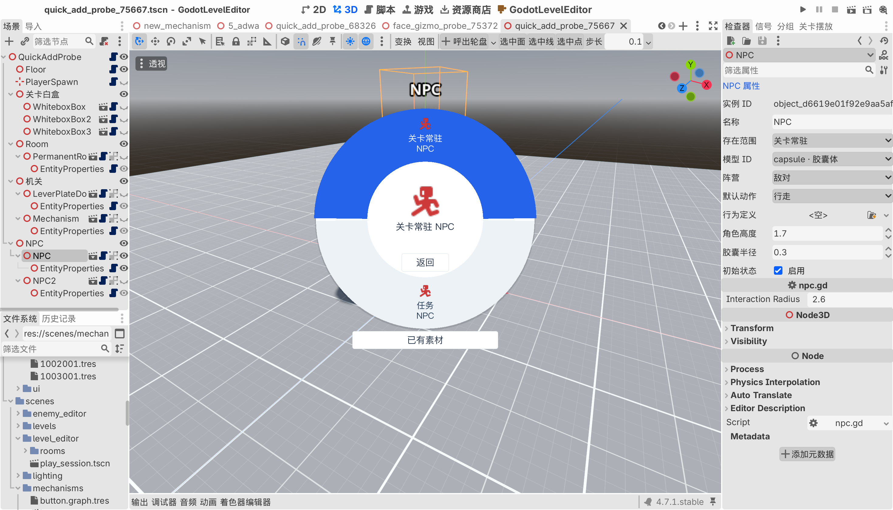
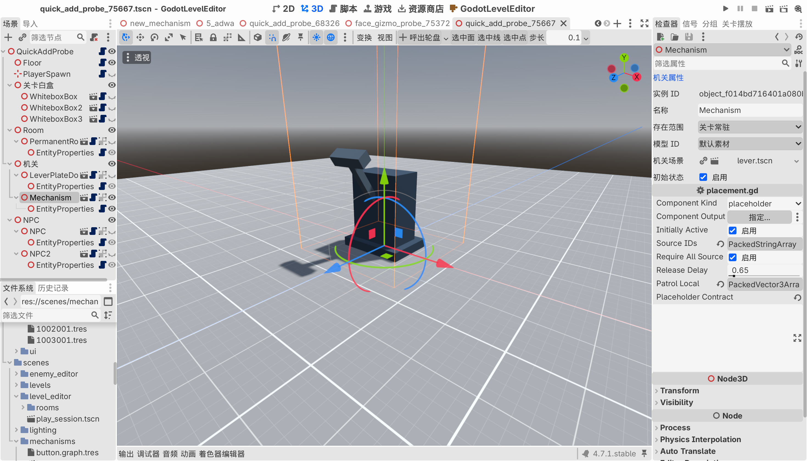

关卡与轮盘操作¶
本页用于查询日常摆放操作。第一次创建关卡请先读 快速开始。
选择当前关卡¶
在独立窗口 关卡 → 我的关卡 单击卡片可看详情，双击或点击 进入编辑 才打开资源。关卡编辑页显示整关常驻逻辑图；地形和物件在原生 3D 视口编辑。
一个箱庭对应一个完整关卡场景。Room 是可放置的区域素材，不要求先拆成多个房间或画接驳线。
呼出轮盘并添加物件¶
- 在当前关卡的原生 3D 视口中点击 呼出轮盘，或短按反引号／鼠标侧键。
- 悬停选择玩家出生点、Layout 白盒、Room、机关、NPC 或最近使用。
- NPC、Room 和机关点击后，再选择 关卡常驻 或 任务对象。选择 已有素材 可以浏览现有场景。
- 鼠标移动到放置位置，左键放置。可连续点击添加。
- 右键或 Esc 结束放置。需要回上一级时，使用二级菜单中心“返回”或右键。

| 操作 | 效果 |
|---|---|
| R / Shift+R | 放置预览正向 / 反向旋转 15° |
| 白盒放置时滚轮 | 切换白盒形状 |
| “全部” | 打开可搜索素材列表 |
| 再按呼出键 | 关闭轮盘 |
| 原生撤销 / 重做 | 撤销放置或实例属性修改 |
鼠标侧键是短按切换，松开不会自动选中素材。工具栏旁的下拉菜单可修改键盘呼出键。
调整位置、尺寸与精度¶
放置结束后点击物件，使用原生变换工具调整；实例配置在原生检查器中修改。工具栏步长可直接填写，也提供 0.1 / 0.5 / 1 预设，同步移动与轮盘放置。
白盒表面网格使用真实米制刻度：1 m 粗线、0.5 m 中线、0.1 m 细线。原生工具栏的 选中面 / 选中线 / 选中点 用于编辑对应元素，Esc 或空白取消子选择后恢复物体操作轴。
选择素材还是配置实例¶
| 需求 | 在哪里修改 |
|---|---|
| 修改这一份对象的位置和朝向 | 当前关卡原生 3D 视口 |
| 修改 NPC 模型、阵营、默认动作或任务归属 | 选中实例后的原生检查器 |
| 修改这个 Room 的检测尺寸 | 实例检查器的宽 / 高 / 深 |
| 给占位机关指定组件场景 | 实例检查器的机关场景 |
| 修改可复用机关的连线与组件配置 | 机关 → 我的机关 → 对应素材 |

任务对象必须选择所属任务，且该任务属于当前关卡。只是测试按钮和门时，选择 关卡常驻 最直接。
自动分组¶
新添加的对象按类别进入场景根下的空父节点：
| 对象 | 分类节点 |
|---|---|
| NPC | NPCs |
| Room | Rooms |
| 机关 | Mechanisms |
| 关卡白盒 | Whitebox |
编辑器自动创建并复用这些父节点，已有物件保持原位。无需为了符合新分类手动迁移旧关卡。
保存与重新试玩¶
保存当前关卡场景，再以该关卡作为活动场景按 F6。若刚编辑了机关源素材，先在机关页保存，再重新打开关卡确认实例更新。
修改配表时避免让 Excel 和编辑器同时保存不同草稿。详见 常见问题。